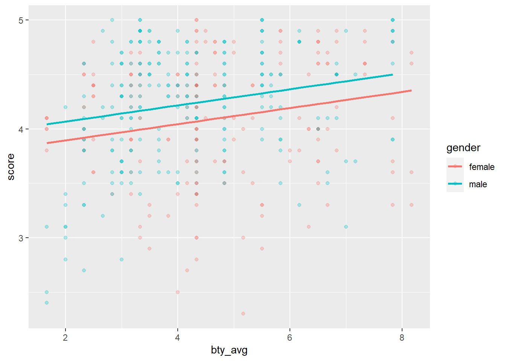
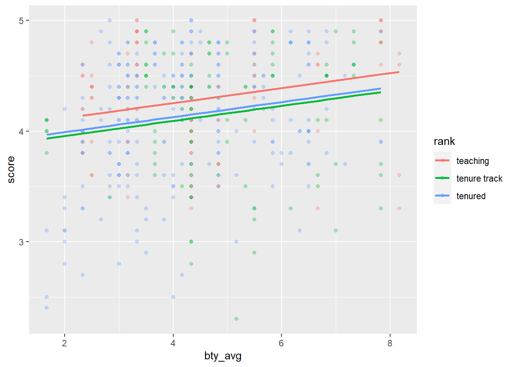

5 Multiple Predictors
In order to see if beauty is still a significant predictor of lecturer score after you've accounted for the lecturer's gender, you can add the gender term into the model.
model1 <- lm(score ~ bty_avg, data = evals)
summary(model1)
model2 <- lm(score ~ bty_avg + gender, data = evals)
summary(model2)5.1 Exercise 4
Produce residual plots for model2 created above.
model2 <- lm(???)
ggplot(data = ???, aes(???)) +
geom_point(color = "seagreen2") +
geom_hline(yintercept = 0, linetype = "dashed") +
xlab(???) +
ylab(???)
ggplot(data = ???, aes(???)) +
geom_histogram(bins = 40, fill = "dodgerblue2") +
xlab(???)
ggplot(data = ???, aes(???)) +
stat_qq() +
stat_qq_line(col = 2)model2 <- lm(score ~ bty_avg + gender, data = evals)
ggplot(data = ???, aes(???)) +
geom_point(color = "seagreen2") +
geom_hline(yintercept = 0, linetype = "dashed") +
xlab("Fitted values") +
ylab("Residuals")
ggplot(data = ???, aes(???)) +
geom_histogram(bins = 40, fill = "dodgerblue2") +
xlab("Residuals")
ggplot(data = ???, aes(???)) +
stat_qq() +
stat_qq_line(col = 2)model2 <- lm(score ~ bty_avg + gender, data = evals)
ggplot(data = model2, aes(x = .fitted, y = .resid)) +
geom_point(color = "seagreen2") +
geom_hline(yintercept = 0, linetype = "dashed") +
xlab("Fitted values") +
ylab("Residuals")
ggplot(data = model2, aes(x = .resid)) +
geom_histogram(bins = 40, fill = "dodgerblue2") +
xlab("Residuals")
ggplot(data = model2, aes(sample = .resid)) +
stat_qq() +
stat_qq_line(col = 2)From the residuals, does it appear that the conditions of least squares regression are reasonable?
Is bty_avg still a significant predictor of score?
Has the addition of gender to the model changed the parameter estimate for bty_avg?
Has the addition of gender to the model provided a better model fit?
Note the estimate for gender is now called gendermale in model2 above. We can see this name change whenever we introduce a categorical variable. The reason is that R re-codes gender from having the values of male and female to being an indicator variable called gendermale that takes a value of \(0\) for female lecturers and a value of \(1\) for male lecturers. (Such variables are often referred to as "dummy" variables). The fitted model (model2) is therefore:
\[ \begin{aligned} \widehat{score} &= \hat{\beta}_0 + \hat{\beta}_1 \times bty\_avg + \hat{\beta}_2 \times gendermale \\ &= 3.75 + 0.07 \times bty\_avg + 0.17 \times gendermale \end{aligned} \]
5.2 Interpretation of a Categorical Variable with 2 levels
The interpretation of parameters associated with categorical variables is slightly different than numerical variables. This is described within, OpenIntro Section 8.2.8 Page 323.
The first two terms \(\hat{\beta}_0 + \hat{\beta}_1 \times bty\_avg\) give the expected score for the first or baseline category or reference level (i.e. the category corresponding to an indicator value of 0), in this example female lecturers. The third term \(\hat{\beta}_2 \times gendermale\) only appears for male lectures (i.e. when gendermale = 1) since the baseline is female, so for female lecturers, \(\hat{\beta}_2\) is multiplied by zero. \(\hat{\beta}_2\) is therefore the average change in the response variable between the two categories. So the estimated parameter value of 0.17239 from model2 above is the difference in the average evaluation score between male and female lecturers, with the average male's score being 0.17239 more than the average female score (when all other variables are held constant). The fitted model showing the relationships between score and bty_avg for the levels of gender can be shown by using the fitted values stored in model2 as follows:
library(broom)
model2 <- lm(score ~ bty_avg + gender, data = evals)
model2_aug <- augment(model2)
ggplot(data = model2_aug, mapping = aes(y = score, x = bty_avg, color = gender)) +
geom_point(alpha = 0.3) +
geom_line(aes(y = .fitted), lwd = 1)
The augment function is part of the broom package and makes information from the fitted model more accessible. This plot shows why this model is referred to as a 'parallel lines model'.
The decision to call the indicator variable gendermale instead of genderfemale has no deeper meaning. RStudio simply codes the category that comes first alphabetically as a \(0\). You can change the reference level of a categorical variable, which is the level that is coded as a 0, using therelevel() function. Use ?relevel to learn more.
5.2.1 Exercise 5
Create a new model called model3 with gender removed and rank added in. Then produce the model summary.
model3 <- lm(???)
summary(???)model3 <- lm(score ~ bty_avg + rank, data = evals)
summary(model3)Note that the rank variable has three levels: teaching, tenure track, tenured (look back at the boxplots in Exercise 2 in the "Exploratory Data Analysis" section).
5.3 Interpretation of a Categorical Variable with more than 2 levels
The interpretation of the coefficients associated with categorical variables in multiple regression is covered in OpenIntro Section 9.1.1 Page 344.
When fitting a regression model with a categorical variable that has k levels where \(k > 2\), R provides a coefficient for \(k − 1\) of those levels. Therefore, one level does not receive a coefficient and this is the reference level or baseline. The coefficients listed for the other levels are all estimates of the difference between the respective levels to the reference level, while holding all other variables constant.
The estimate for bty_avg estimates the change in expected evaluation score for every unit increase in beauty rating while holding all other variables constant. In this case, that translates into considering only lecturers of the same rank with bty_avg scores that are one point apart. The following plot shows the fitted model we called model3 (again note the 'parallel lines').
model3 <- lm(score ~ bty_avg + rank, data = evals)
model3_aug <- augment(model3)
ggplot(data = model3_aug, mapping = aes(y = score, x = bty_avg, color = rank)) +
geom_point(alpha = 0.3) +
geom_line(aes(y = .fitted), lwd = 1)